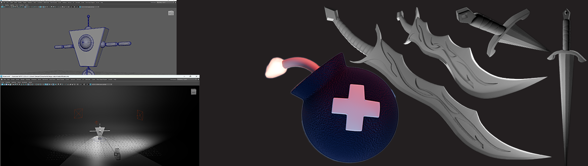
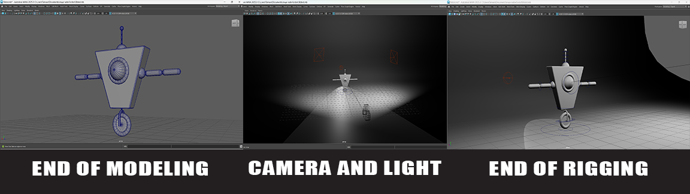
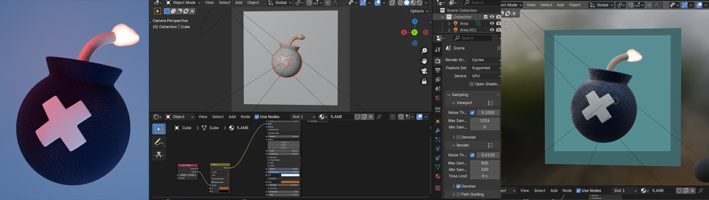

3D Models
I am a beginner in 3D modeling, animation, and design. I mainly work in Autodesk Maya, but I also have experience working in Blender. I’m still learning and improving my skills, exploring different areas of 3D art and design. This portfolio showcases my practice projects and personal work as I continue to grow in the field.
This 3D model represents a stylized sword named Demon Blade, created based on a 2D concept illustration. The focus of the project was on clean modeling and preserving the distinct shape language from the original artwork. Special attention was given to the details along the blade, where I incorporated engraved patterns to enhance the demonic aesthetic. The entire model was created in Autodesk Maya, without texturing or shading, as a study of form, proportions, and surface detail.
This 3D model is based on a classic European arming sword design. The goal of this project was to recreate clean, realistic proportions and historical shapes commonly seen in traditional arming swords. I focused on modeling accurate blade geometry, a detailed guard, and a defined handle silhouette. The model was created in Autodesk Maya, following reference images, without textures or materials — emphasizing form, structure, and modeling practice.
This is a simple animated robot character named Fred. The animation features Fred entering the scene from the left, stopping at the center, turning toward the camera, waving, and bowing. His eye shifts to the left as he notices a ball, reacts with a startled jump, and quickly rolls away to the right while the ball bounces after him.
Fred was modeled, textured, and animated in Autodesk Maya. The character design includes a single wheel for movement and a mechanical eye for expression. The project also involved basic lighting setup to enhance the scene. This was a practice piece focused on character animation, timing, and simple interaction with other objects in the environment.
This animation was created within a 72-hour deadline. I receivedthe rig and the texture, while everything else was made by me, from the exercise bars to the entire animatoion movement. It was based on reference from parkour athletes who uploaded videos on YouTube. The task was for the animation to last 22 seconds, 30 frames abd be in full HD resolution. This was mt first time working on a character animation, and it was created in Autodesk Maya.
Bomby is a stylized game asset created for a beta version of the game Diamond and Bombs. The model was made in Blender, fully textured and rendered with simple lighting setup. This project was a collaboration with a friend and focused on creating a game-ready model suitable for stylized environments.